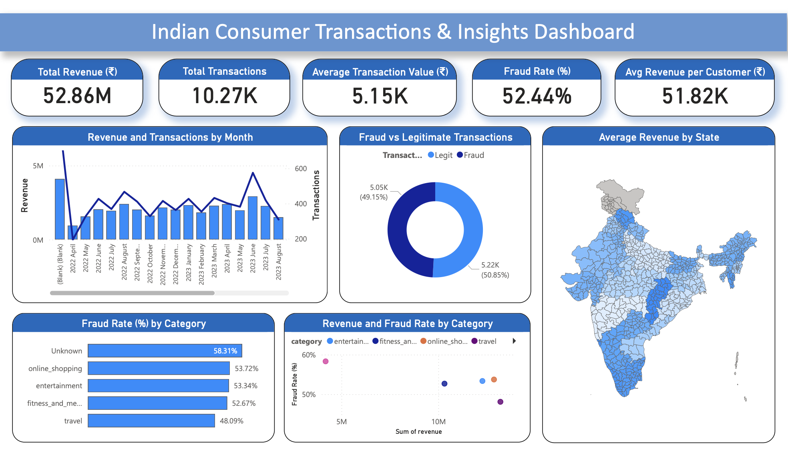

A Power BI dashboard analyzing consumer transactions, fraud patterns, and behavioral trends across India.
This Power BI report explores a simulated dataset of consumer transactions and fraud cases in India. It visualizes financial performance, category-level fraud risk, and regional revenue distribution. The goal was to build an intuitive dashboard for identifying high-risk areas, understanding behavioral drivers, and improving fraud prevention through data storytelling.
Below is a screenshot of the interactive Power BI dashboard. It highlights total revenue, fraud rates by category, revenue and fraud correlations, and state-level revenue distribution.
Built with Power BI using simulated consumer and fraud data.
Tool: Microsoft Power BI
Dataset: Simulated Indian Consumer & Fraud Data
Techniques: DAX measures, KPI cards, map visuals, combo charts, data modeling
Focus: Fraud detection, consumer segmentation, and regional performance visualization